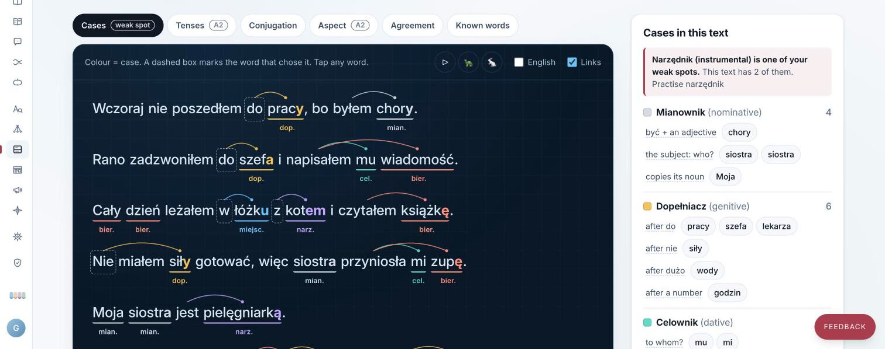
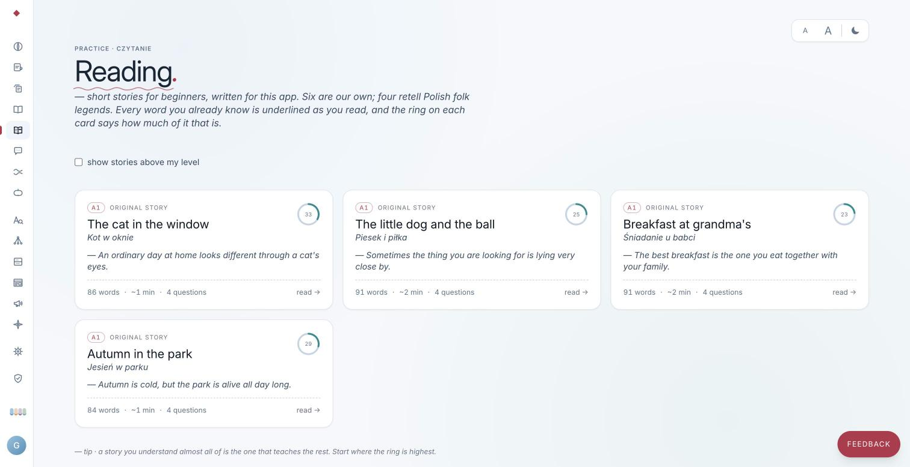

Software built by a family of engineers.
Sasmaz labs is where Umut and Esra Şaşmaz, two network and security engineers in Poland, build software together: Octopus for teams that run networks, Paws 'N' Board for a pet hotel in Warsaw, and Polski for people learning Polish.
Octopus keeps a record of every change to your network.
Octopus is our first product, an abstraction layer for network operations. It sits between your engineers and every device: configurations are versioned, changes go through approval, and anything changed by hand shows up as drift.
- Every device configuration kept as a version, with a diff between any two
- Drift from your golden configs, down to the line
- Changes run as runbooks, after a second engineer approves them
- A tamper-evident audit trail, sent to your own SIEM
- Claude as the troubleshooting advisor, now in development
Pre-release. Cisco IOS, IOS-XE and IOS-XR first.
interface GigabitEthernet1/0/24description desk-3-14switchport mode access- switchport access vlan 20+ switchport access vlan 30spanning-tree portfast
Incident INC-2041: desk 3-14 has no network
- Started
- 14:02, three minutes before the desk was reported offline.
- Root cause
- Gi1/0/24 was moved from VLAN 20 to VLAN 30 by hand, outside any runbook. The golden config still expects VLAN 20.
- Verified with read-only checks
-
show interfaces Gi1/0/24 switchportAccess Mode VLAN: 30show mac address-table interface Gi1/0/24The desk's MAC address is now in VLAN 30 - Suggested fix
- Roll back to version 42 through a runbook. A second engineer approves it before it runs.
Logged to INC-2041 at 14:06
Example data. The advisor is in development.
Paws 'N' Board runs a pet hotel from one place.
We built it for a pet hotel in Warsaw's Żoliborz district. Pet owners book and chat from their phone, the team sees the day's animals and tasks, and the owner runs the business from one panel.


Built and in testing before launch. Polish, English and Ukrainian.
Read about Paws 'N' BoardPolski helps you learn the Polish you need every day.
Polski started as the web app we use to learn Polish ourselves. Now we are opening it to other learners.
- Daily review with spaced repetition, a streak and a daily goal
- 30 lessons, from greetings to ordering a beer
- Grammar guides for all seven cases, with the endings coloured in
- X-ray: paste any Polish text to see the case of every noun and the tense of every verb
- Short stories and daily news in Polish that mark the words you already know
- Everyday dialogues, with word-by-word pronunciation feedback
Live at polski.bizimeraketmeyin.com


Bizi Merak Etmeyin is our family blog.
The name means “don't worry about us, we are fine”. We write it in Turkish, for anyone planning a trip to Poland or a longer stay.
- Step-by-step guides to Polish paperwork, such as ZUS insurance letters and tax certificates
- Everyday life: online grocery shopping, public holidays and the European health insurance card
- Polish words for daily life, and the words Polish and Turkish share
- Trips and pets
Written by Esra and Umut

Two engineers, one family.
We have both spent our careers keeping networks running and safe, at mobile operators, security companies and banks. Octopus is the tool we always wanted at work.
Umut Şaşmaz
Co-founder
Lead automation engineer at Bosch. Before that, ING in Warsaw, A10 Networks, Intertech and Turkcell. More than ten years of network and security automation.
Esra Şaşmaz
Co-founder
Senior network security engineer at ING in Warsaw. Before that, KoçSistem, Vodafone, Barikat and Turkcell. Working in security since 2017.
How we work
We both work full time. For years, building what we wanted after work meant giving up our social life. Now that AI agents have matured, some of those tasks are offloaded to them.
Small and close
We are two founders. The people who decide what we build are the people who answer your email.
Why Claude
We use several AI agents and keep trying new ones. In our experience, Claude gives the best results.
A loop that learns
We run Claude inside harnesses built on our years of experience. It orchestrates the work, writes and tests the code, feeds its results back into the loop and learns from its own mistakes.
People stay in charge
Every issue is written together with a person, and every merge is made by a person.
Say hello
Questions about Octopus, Paws 'N' Board or working with us? Write to either of us. We answer every message ourselves.